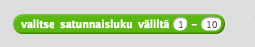

Tässä osiossa opetellaan toteuttamaan joitakin peleissä tärkeitä asioita Pythonilla.
Satunnaisuus
Saatat muistaa Scratch-kerhosta, miten esimerkiksi vihollisia voi Scratchilla sijoittaa satunnaisesti pelikentälle.
Nyt opetellaan Pythonilla satunnaisluvun generoiminen valmista funktiota apuna käyttäen. Seuraavassa kuvassa on tapa
jolla Scratchissa otetaan satunnaisluku väliltä 1-10.

Pythonissa saman toteuttamiseen tarvitaan random -kirjastoa. Se tuodaan ohjelmaan import random -käskyllä. random.randint(1, 10)
tekee saman kuin Scratchin versio, siis arpoo satunnaisluvun väliltä 1..10.
import random
print(random.randint(1, 10))
Tehtävä 1: Nopan heittäminen
Tee ohjelma, joka heittää noppaa ja ilmoittaa silmäluvun.
Ohjelman mahdollisia tulostuksia ovat esimerkiksi seuraavat:
Silmäluku: 3
Silmäluku: 5
Tehtävä 2: Kolikon heittäminen
Tee ohjelma, joka heittää kolikkoa ja ilmoittaa tuloksen (kruuna tai klaava).
Ohjelman mahdolliset tulostukset ovat seuraavat:
Tulos: kruuna
Tulos: klaava
Tehtävä 3: Salasanan arpoja
Tee ohjelma, joka arpoo käyttäjälle salasanan.
Salasana muodostuu merkeistä a-z ja siinä on 8 merkkiä.
Ohjelman tulostuksia ovat esimerkiksi seuraavat:
Salasana: zitbfsnt
Salasana: wlprcusq
Tehtävä 4: Sekoittaja
Tee ohjelma, joka sekoittaa listan sisällön.
Sovella ohjelmassa satunnaisuutta haluamallasi tavalla.
Ohjelman runko on seuraava:
luvut = [1, 2, 3, 4, 5, 6, 7, 8]
sekoitaLista(luvut)
tulostaLista(luvut)
Tehtävä 5: Vihollisen sijainnit
Tee ohjelma, joka luo listan nimeltään vihollisenSijainnit ja arpoo 1000 kappaletta vihollisen sijainteja lisäten ne listaan.
Vihollisen sijainti on merkkijonopari x,y. Esimerkiksi "5,16" on kelpo vihollisen sijainti. Sekä x- että y-koordinaatit voivat
olla väliltä 0-100. Tulosta lopuksi lista jotta näet mitä se sisältää.
Vinkki: Muistathan että merkkijonoja yhdistetään plusmerkillä.
merkkijono = "a"
merkkijono += "bc"
print(merkkijono) #tulostuu abc
Listan järjestäminen
Saatat tarvita peliä tehdessä listan järjestämistä esimerkiksi pisteiden tai etäisyyksien suuruusjärjestykseen laittamisessa. Seuraavassa esimerkissä
määritellään, järjestetään lista valmista funktiota kutsumalla ja tulostetaan se. Jos olet kiinnostunut tarkemmin siitä miten järjestäminen toimii
sort -funktion sisällä, googlaa esimerkiksi kuplalajittelu (bubble sort) tai lomituslajittelu (merge sort).
lista = [1, 3, 5, 4]
lista.sort()
print(lista) #tulostuu [1, 3, 4, 5]
Tehtävä 6: Pistelista
Tee ohjelma, joka kysyy käyttäjältä pelaajan nimen ja pisteet ja jatkaa tätä, kunnes käyttäjä antaa syötteen "lopeta" pelaajaa kysyttäessä. Tämän jälkeen
tulostetaan parhaat pisteet ja niiden pelaaja.
Anna pelaaja: Pihla
Anna pisteet: 50
Anna pelaaja: Ada
Anna pisteet: 65
Anna pelaaja: lopeta
Pihla, 50